New Angle · XCurrent · סרטון הגבול
בריף מלא לקלוד (הכל בקובץ אחד) קובץ לקלוד (md)XCurrent, סרטון הגבול: הערות צדק על שתי גרסאות השלד
בשורה אחת
בונים על גרסה 1: פלטה בודדת שמסתובבת, עוצרת על כל רחפן לנתונים, ממשיכה ומחליפה רחפן. מגרסה 2 לוקחים את הגדר, הים והמרחקים (הכל רחוק יותר ופחות צפוף). העולם בעיצוב "צפחה לילית". אין קריינות בכלל, רק טקסט על המסך ומוזיקה, ולכן כל נקודת עצירה היא מקום לנתון. ה-UGV מקבל רגע משלו לפני הנגמ"ש, והסיום הוא מבט על עם קווים ומרחקים, ואז הלוגו.
איך לקרוא
- זה עדכון לקובץ "XCurrent-גבול-הערות-צדק-לנדב-25.10.26" שכבר אצלך. כל מה שכתוב כאן גובר עליו. מה שלא מוזכר כאן נשאר בתוקף (בלי אויב, בלי פריצה, בלי כלב, בלי טבעות ומשושים סביב הפלטה, שום מודל של רפאל, הפלטות מאחורי ההרים).
- בזום הוצגו שתי גרסאות שלד, שתיהן של נדב: גרסה 1 (נשלחה בוואטסאפ 26.10 ב-22:28, באורך 1:19) וגרסה 2 (נשלחה 27.10 ב-01:47, באורך 1:07). הבסיס הוא גרסה 1. מגרסה 2 לוקחים רק את מה שמסומן בסעיף 2.
- הצעד הבא: פריימי עיצוב עם טקסט בכל נקודת עצירה (סעיף 7), לאישור צדק. במקביל מתקנים את השלד לפי ההערות כאן ("נתקן את הווידאו תוך כדי", 36:26). רק הרינדור הסופי מחכה לאישור של צדק.
מה השתנה מאז 25.10 (כדי לא לבנות לפי הישן)
- העמודים של התחנות לבנים ולא זוהרים, ואין "חתימת אור" שזוהרת בכל מקום בטופ שוט.
- ה-EVO יוצא מקופסה ב-UGV, ולא ממריא מהמדרון האחורי.
- בפועל ירד הרעיון של רחפן שנוחת על הנגמ"ש בנסיעה. הנגמ"ש רק מופיע, רחוק, עם משטח ואור קטן.
- הסיום הוכרע: חלון בצד, טופ שוט עם מרחקים בלבד, ואז XCurrent. אין קו מסלול של רחפן.
- ה-UGV עלה בחשיבות מעל הנגמ"ש.
- נדב טס ביום ראשון 1.11, לא ב-30.10.
- הזמנים בסוגריים הם דקות בהקלטת הזום (27.10.26, 14:30). התמלול אוטומטי וייחוס הדוברים לפי הקשר. מה שלא ודאי מסומן "(לא ודאי)".
- התגיות ליד התמונות: לשמור לתקן לצאת רפרנס. פריימים של גרסה 2 מסומנים בזמן שלהם בהקלטת הזום. פריימים של גרסה 1 מסומנים בזמן ההערה שהם ממחישים.
1. מה ראינו (לזיהוי)
- גרסה 1 (הבסיס): פתיח XCURRENT. פלטה שחורה עם מסגרת תכלת על רשת, רחפן עליה ופסים אפורים במקום טקסט. סיבוב, החלפת רחפן, 6 פלטות מתחברות עם רחפנים עליהן. נסיגה החוצה, גדר והרים, ספינה וכטב"ם שממריא, נגמ"ש, מבט על עם עמודים (תחנות) מאחורי ההרים, ומפה עם קו מחבר. לוגו בסוף.
- גרסה 2: פתיח XCURRENT. שטח עם אבנים, גדר חומה וים כהה. פלטה על השטח, רחפנים שעפים אליה ממנה ובחזרה ("רחפנים באוויר"). 6 פלטות עם נגמ"ש לידן. ספינה, גדר גבוהה בטקסטורה, נגמ"ש ו-UGV על כביש רשת ליד הגדר. מבט על עם קווים כחולים, וחלון קטן בצד שמראה את יחידת 6 הפלטות. לוגו.
2. מה לוקחים מכל גרסה
מגרסה 1 (הבסיס, "רוב מה שיש פה זה מהגרסה הראשונה", 26:18):
- הסיבוב של הפלטה. "אני אוהב את הסיבוב הזה יותר מהסיבוב שם" (11:10). על גרסה 2: "בסרטון הקודם עשית סיבוב, עצירה, זה נראה לי יותר make sense... כאן זה בא, הולך, עושה לי דברים בראש" (18:59 עד 19:11).
- המבנה הכללי של הסרט.
מגרסה 2 לוקחים (26:09 עד 26:17, 19:22 עד 19:24):
- הטקסטורות של הגדר. "נראה שהחלפתם את הגדר, באמת כמו גדר של ארצות הברית" (19:12), ו"הגדר פה נהדרת" (19:23).
- הים. "הים פה נהדר".
- המרחבים: הכל רחוק יותר. נדב: "בסרטון שבא אחר כך תראה שלקחתי את זה יותר רחוק" (15:01).
- החלון בצד לפני הטופ שוט (יחידת הפלטות המחוברות), בלי רחפן עליה (33:31 עד 33:52). ראו סעיף 4, ביט ח'.
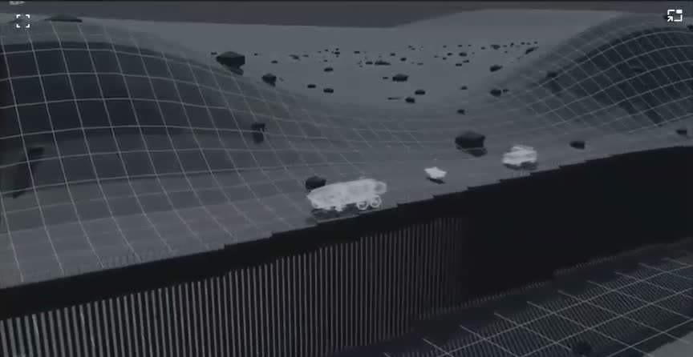
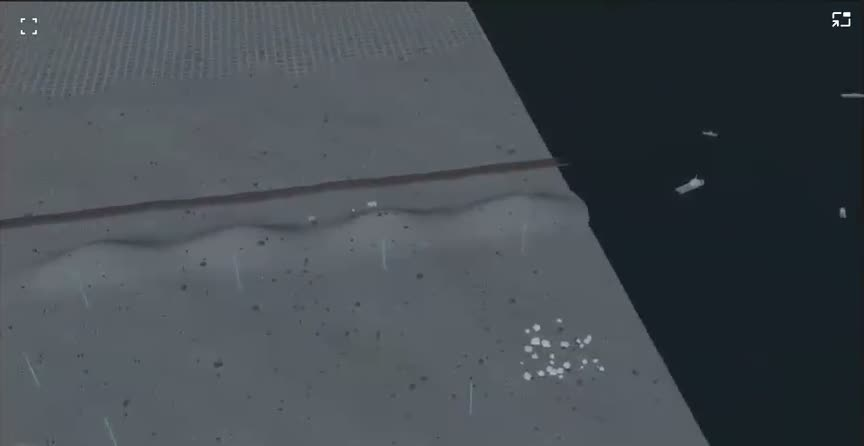
מגרסה 2 לא לוקחים:
- הרחפנים שעפים אל המצלמה, עולים וחוזרים. "כאן יש מלא רחפנים באוויר... כל הסיבוב הזה שהוא בא אליי, עולה, חוזר, בוא נתעלה מזה, אנחנו הולכים לקודם: מסתובב, עוצר, מסתובב, עוצר" (17:22 עד 17:33). נדב הסביר שהוסיף תנועה כי חשש שהחלק הזה סטטי ומשעמם (הריבולבר של Anduril), והציע: נשאר בסגנון של גרסה 1, ואם צריך מוסיפים תנועת מצלמה (18:15 עד 18:20). צדק נשאר עם גרסה 1.
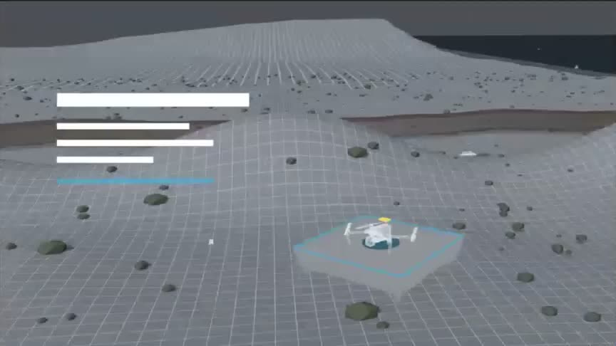
3. ההחלטות, לפי סדר הסרט
א'. הפלטה הבודדת והסיבוב
- הסיבוב נעצר על כל רחפן. ההצעה של נדב (11:18 עד 11:50), וצדק: "מדהים, מדהים, מדהים". ניתן להוסיף לזה תנועת מצלמה עדינה, אם החלק הזה ירגיש סטטי (18:15). הרצף: הפלטה מסתובבת, רחפן מופיע, הפלטה נעצרת, נכנסים הנתונים, הנתונים נעלמים, הסיבוב ממשיך ומחליף רחפן. הנימוק של צדק: "אני לא מזהה שיש שם החלפה, וכשאתה עוצר אתה נותן קשב לצופה" (11:36 עד 11:45).
- המסגרת הכחולה סביב הפלטה יוצאת. "הריבוע מסביב, הכחול הזה, אני לא מתחבר אליו" (09:38).
- הכחול באמצע הפלטה קטן הרבה יותר. "הוא טיפה משתלט לנו על המשטח. זה צריך להיות נקודה קטנה כזאת" (09:53 עד 10:11). כלומר אינדיקציית טעינה קטנה, לא משטח זוהר. צדק אמר שזה נכון גם בעיצוב הצפחה (09:57). (הערה שלנו: בפריים S1 של הצפחה הזוהר באמצע גדול מדי, אז שם מתקנים.)
- הריבועים הכחולים ברקע (הפלטות הפזורות מסביב בגרסה 1): צדק "פחות" אוהב אותם (10:22 עד 10:30). מיד אחר כך נאמר "הם לא היו קיימים בכלל... ראיתי (כנראה: הורדתי) אותם מהסרטון האחרון" (10:35), כלומר כנראה כבר ירדו בגרסה 2. להוריד.
- מודלים אמיתיים, לא פרוקסי. על הרחפן הזמני: "נראה איזה יצור... יש לכם מודלים טובים" (10:43 עד 10:48).
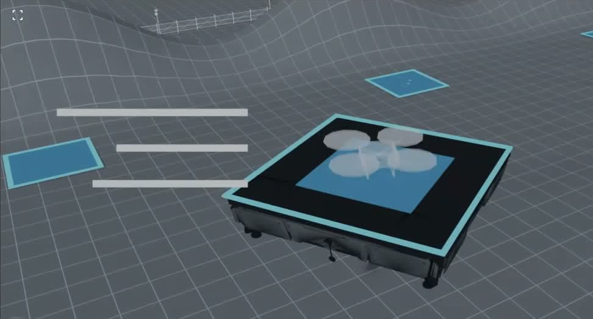
ב'. 6 הפלטות
- בלי מפרידים בין הפלטות. "כל הקטע שלנו ב-XCurrent: לא צריך נחיתה מדויקת. אתה יכול לנחות על שתי משבצות ביחד... ברגע שמתחברים הם הופכים להיות אחד. בגלל זה גם לא צריך ביניהם מפרידים" (12:42 עד 13:00).
- הרחפנים לא חייבים לשבת אחד בכל ריבוע. אפשר לפזר אותם על הפלטות, גם על שתי משבצות. לחזק את זה בכיתוב (13:01 עד 13:12).
- אם הכטב"ם (ה-VTOL) שחיים מביא יוצא גדול מדי על 6, מגדילים ל-3 על 3 (9 פלטות) (12:20 עד 12:29). מותר להגדיל את המשטחים (12:37).
- הסימונים בצבע על הפלטות כרגע הם רק סימון. הכל לפי העיצוב (11:56 עד 12:03).
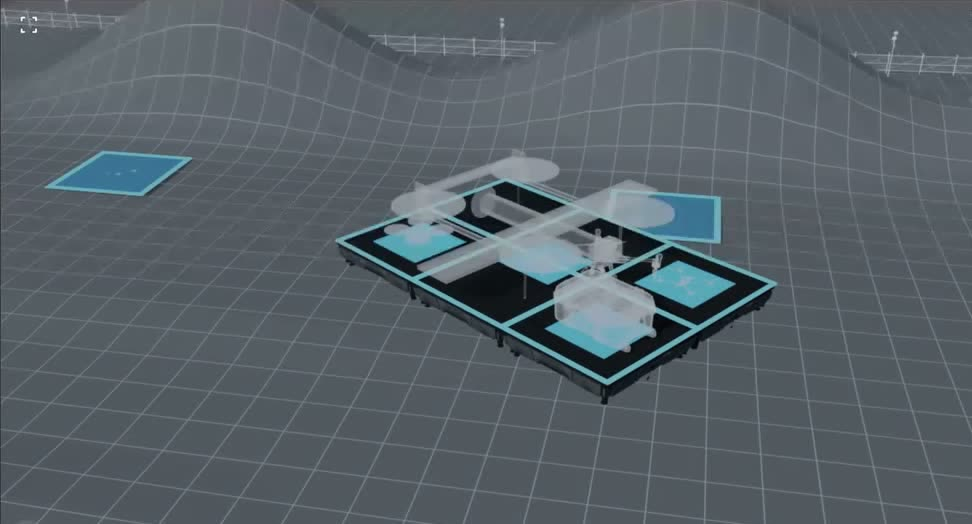
ג'. הנסיגה ממערך הפלטות (מבנה חדש, צדק)
- במקום טילט אפ מהפלטה: נסיגה אחורה שמראה את כל התחנות לאורך הגבול, ורק אז המראה. "למה לא עכשיו אנחנו מראים את כל התחנות פרוסות... ואז ממריאים?" (19:50 עד 20:06). "סופר לונג שוט, חוזרים אחורה, כמעט מבט על מהצד" (20:59).
- בנסיגה בונים את הקווים בין התחנות, "טיק טיק טיק". "באנדוריל הם מותחים לנו קווים ומראים לנו מה קורה שם... לבנות את הקו הזה שנמתח בין כולם, ואז להמריא" (21:20 עד 21:35).
- עצירה עם נתונים. "העיקרון המרכזי זה שעוצרים ונותנים נתונים" (21:56 עד 22:01). בנקודה הזאת: מרחקים, ו-3 עד 4 מילים או חצי משפט (22:24 עד 22:51). צדק נתן דוגמאות בלבד, לא נוסח סופי: "רחפנים טעונים, רחפנים זמינים", "different system". "לא יודע, אני אחשוב... זה לא חייב עכשיו" (22:43).
- איך חוזרים מהנסיגה להמראה (שתי אפשרויות, שתיהן אושרו, ההחלטה שלנו):
- אפשרות א' (כנראה של איתן, לפי ההקשר): בדולי האחורה נחשפת בפורגראונד עוד פלטה, והרחפן ממריא ממנה, כך שלא צריך לחזור פנימה (24:52 עד 25:12).
- אפשרות ב': חוזרים פנימה לתחנה אחרת שממנה ממריא רחפן אחר (21:36, הדובר לא ודאי), או לרחפן שיוצא, עוקבים אחריו ועושים את ה-120 לכיוון הים (22:08 עד 22:15).
- צדק על אפשרות א': "מדהים, גם עובד מבחינתי. אבל הקווים חייבים להיות ביניהם" (25:13 עד 25:16). כלומר שתיהן בסדר מבחינתו, בתנאי שהקווים בין התחנות נבנים.
- ההמלצה שלנו: אפשרות א', כי היא שומרת על שוט אחד בלי חזרה פנימה.
ד'. המרחקים והעולם
- הכל רחוק יותר. "המשטחים מאוד מאוד קרובים בעין... גם אם זה באמת שמונה קילומטר, לבן אדם זה נראה ממש קרוב" (13:27 עד 13:47). "אנחנו מדברים על תשתית, משהו רחב וגדול, לא צמוד" (26:21 עד 26:26).
- הפתרון למרחק: קו לבן בין המשטחים עם כיתוב קילומטרים (או מייל), אולי עם חץ (13:48 עד 14:03, הדובר לא ודאי). נדב: בבלנדר 8 ק"מ אמיתיים הופכים את הפלטה לנמלה, אז מזייפים את המרחק בתמונה ומעבירים אותו כנתון (14:10 עד 14:27).
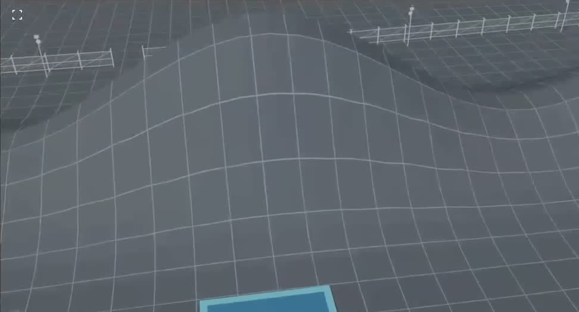
- הרכבים (שליד הגדר) רחוקים מהמשטחים. "הרכבים יכולים להיות בכלל רחוקים מהמשטחים על הגדר... אני לא רוצה שהכל יהיה צפוף" (26:27 עד 26:36). גם "להרחיק את היחידות האחוריות מהשביל" (15:07).
- הספינות רחוקות זו מזו. "יש לי ארבע, חמש סירות... הן ממש צמודות, כמעט נוגעות" (16:59 עד 17:10). וגם הספינות רחוקות יותר, כנראה (14:57, ו-25:30 בזמן שגרסה 2 הייתה על הים: "יותר רחוקות... כן כן כן").
- ההרים מעוצבים יותר, לא רק גלים (14:28). לפי העיצוב (14:35).
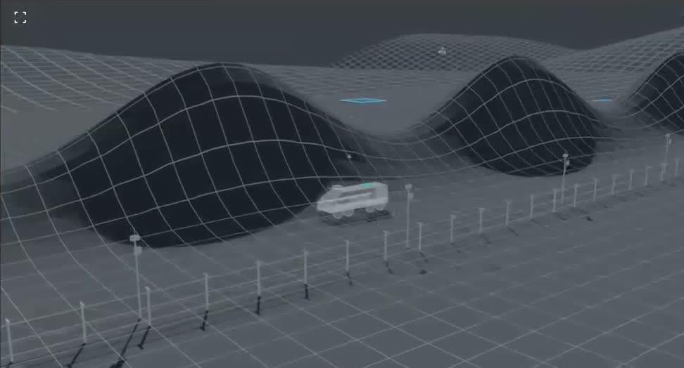
- העמודים של התחנות: לבנים, לא זוהרים. "עדיף שהם יהיו לבנים ולא זוהרים כאלה" (15:32). נדב: אפשר גם שלא יראו אותם בכלל (15:28).
- סגנון הקווים: קווים עדינים, נקיים, שמחברים הכל, כמו ב-Anduril (15:46 עד 15:54). על פריים העולם בעיצוב הצפחה (S3, הקווים שעולים לשמיים): "אני אוהב את הקווים האלה" אבל "לא אוהב את האורות האלה" (16:24 עד 16:29, לא ודאי מי אמר). כלומר הקווים נשארים, הזוהר הכחול של העמודים יורד, בהתאם לסעיף 19.
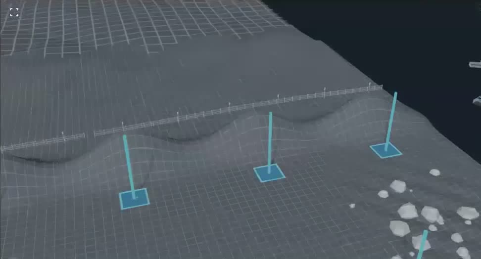
- הנגמ"ש בגרסה 2 הוא פרוקסי לנוחות העין. בעיצוב האמיתי משתמשים במודל האמיתי (25:50 עד 26:06).
- נדב הסביר את סוף גרסה 2: אנחנו בצד שלנו ומסתכלים מהשטח שלנו, לא מצד האויב, ולכן לא רואים את הפלטות שמאחורי ההרים. העמודים = הפלטות = תחנות הדלק (26:37 עד 27:33).
ה'. התרחישים: הים, ה-UGV, הנגמ"ש (סדר חדש)
- הים: רואים משהו ממריא מהספינה. "אנחנו לא יודעים לאן הוא טס... הוא באוויר, משוטט לו". עוקבים אחריו קצת, ואז יורדים ל-UGV (28:51 עד 29:08).
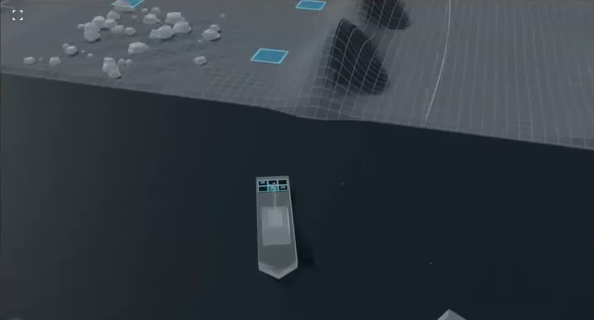
- ה-UGV לפני הנגמ"ש, ומקבל רגע משלו. "צריך לתת לו גם את הרגע. הוא אפילו יותר חשוב מהנגמ"ש... תתחיל איתו לפני הנגמ"ש" (27:42 עד 27:55).
- מה יש ב-UGV (צדק): שתי קופסאות, לפי התמונות ששלח. באחת רחפן EVO גדול. בשנייה ארבעה רחפנים טקטיים קטנים ועגולים (ארבע "סלסלות"), מהסוג שנכנס לבתים. "יש לכם את המודל" של הקטנים (28:05 עד 28:13, 29:43 עד 30:00). "סקייל לא חשוב, לא נכנסים לתוך בתים", רק מראים את האפשרות (30:01). את סדר הפתיחה צדק השאיר לנו ("תחליט אתה", 29:16 עד 29:35), ואז סוכם הסדר שבסעיף 26.
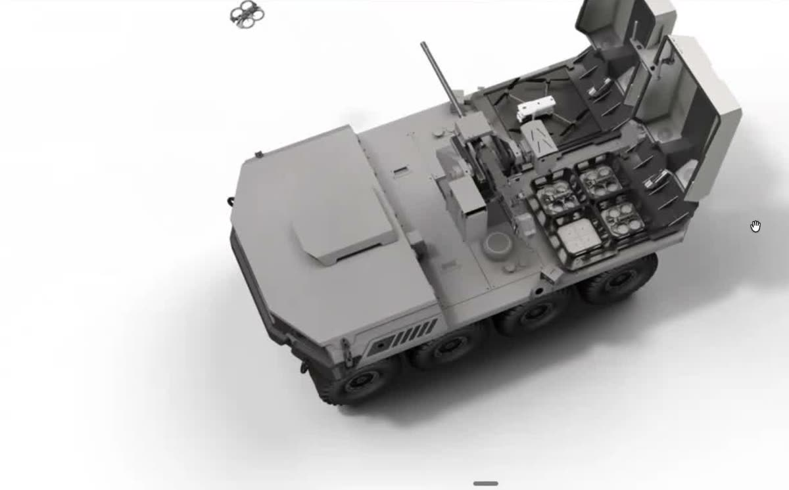
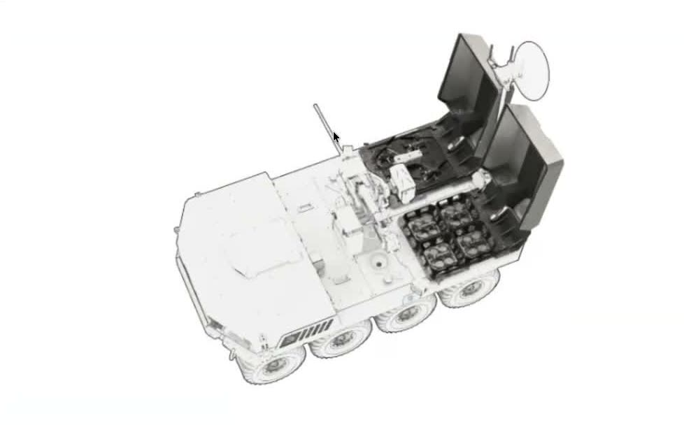
- תנועת המצלמה על ה-UGV (סוכם): מגיעים מול הקופסה של ה-EVO, היא נפתחת, ה-EVO יוצא וטס (אפשר לסגור את הקופסה או להשאיר פתוחה). ממשיכים בתנועה של 45 מעלות לקופסה השנייה, שנפתחת תוך כדי התנועה, ויוצאים ממנה הרחפנים הקטנים, אחד אחרי השני (32:02 עד 32:15). נדב הציע קודם 180 מעלות גב מול גב, צדק: "שתיהן פרונטליות, רק צריך דולי" (30:34 עד 30:52), ולכן 45.
- הנגמ"ש אחרון ורחוק יותר. "רק אז נלך שנייה לנגמ"ש, שהוא בכלל יותר רחוק" (30:07). בלי המראה ונחיתה עליו: "אל תמריאו... זה כבר יותר מדי. נראה שם איזה אור קטן" (30:13 עד 30:17). "אם רוצים להראות את ה-infrastructure, בהמשך שם רחוק... נגמ"ש נושא ברחוב, יש לו גם משטח, וזהו, כאן מסיימים" (32:16 עד 32:26). כנראה זה המקום לכיתוב בסגנון
same energy infrastructureמה-25.10. בפועל זה מוריד את תרחיש ה-EVO שנוחת על הנגמ"ש בנסיעה מה-25.10. נדב הציע רחפן עם סוללה ריקה שנוחת על הנגמ"ש (27:56, 28:44), צדק עצר ("שנייה, שנייה... עוד פעם", 28:48), סידר מחדש את הסדר ואמר "אל תמריאו". הוא לא אמר במפורש "בלי נחיתה", אבל זה הכיוון. - תמונה של ה-UGV עם שתי הקופסאות הוצגה בזום מהוואטסאפ של צדק. הוצע שישלח טובה יותר, ונאמר "זה מספיק טוב, זה מספיק טוב, הבנו" (31:44 עד 31:49). כלומר תמונה נוספת היא רשות, לא חובה.
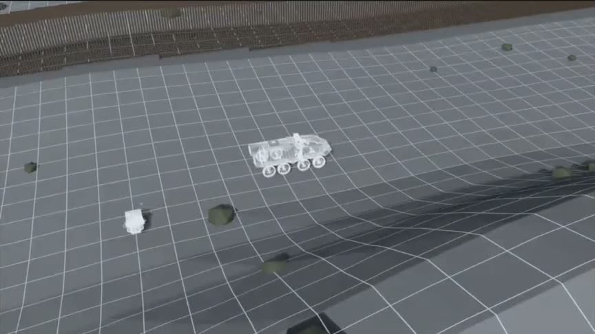
ו'. הסיום
- לפני הטופ שוט: החלון בצד (כמו בגרסה 2), שמראה את יחידת הפלטות המחוברת, בלי רחפן. "קונקשן, all of them... בלי רחפן" (33:31 עד 33:45).
- הטופ שוט: רק מרחקים. קווים בין כל הנקודות. "רק מרחקים, זה חשוב" (33:51). אין קו מסלול של רחפן מנקודה לנקודה (שעלה ב-25.10).
- ואז "XCurrent" וזה סוף הסרטון (33:53 עד 33:58).
- השאלה אם בסוף כל הרחפנים נוחתים, ואיך בדיוק מחברים בקווים: "מה שתחליטו" (32:28 עד 32:32).
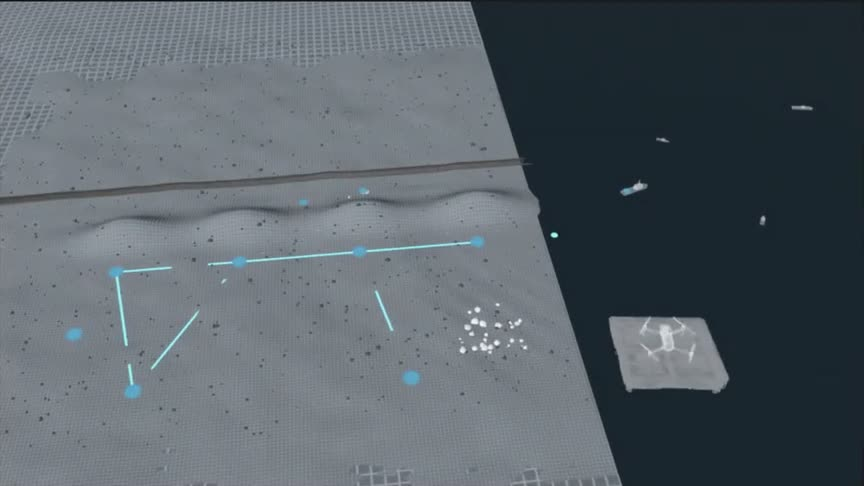
4. המבנה המעודכן, שוט אחד רציף
הטבלה רחבה, אפשר לגלול אותה לצדדים.
| ביט | מה קורה | עצירה לנתון |
|---|---|---|
| א | פתיח. פלטה בודדת באוויר מעל השטח (גרסה 1). מסתובבת, נעצרת על כל רחפן, ממשיכה ומחליפה | כן, על כל רחפן |
| ב | 5 פלטות מתחברות, בלי מפרידים. כמה רחפנים שונים יחד, גם על שתי משבצות. כטב"ם גדול (3x3 אם צריך) | כן: מודולריות, "לא צריך נחיתה מדויקת" |
| ג | נסיגה ארוכה לאחור עד כמעט מבט על מהצד. כל התחנות לאורך הגבול, הקווים ביניהן נבנים "טיק טיק טיק", עם מרחקים | כן: מרחקים + 3-4 מילים (למשל "רחפנים טעונים, זמינים", לא סופי) |
| ד | ההמלצה שלנו (צדק אישר את שתי האפשרויות): בדולי האחורה נחשפת פלטה בפורגראונד ורחפן ממריא ממנה. ה-120 לכיוון הים | |
| ה | הים: משהו ממריא מספינה (ספינות מרווחות), טס ומשוטט, עוקבים קצת | |
| ו | יורדים ל-UGV: קופסת EVO נפתחת, EVO טס. 45 מעלות לקופסה השנייה, נפתחת, 4 קטנים יוצאים | כנראה |
| ז | נגמ"ש רחוק עם משטח, ואור קטן עליו. בלי המראה ונחיתה | כנראה: same energy infrastructure |
| ח | חלון בצד: יחידת הפלטות המחוברת, בלי רחפן. טופ שוט עם קווים ומרחקים בלבד | כן: מרחקים |
| ט | "XCurrent". סוף |
5. העיצוב: "צפחה לילית" (D2 Midnight Slate)
- העיצוב שנבחר הוא "צפחה לילית" מדף העיצובים של 26.10 (D2). צדק פתח אותו בזום. מהצד שלנו נשאל "אתה רואה שם את הפלטה? ככה זה ייראה", וצדק: "סבבה, קצת לבן בצדדים, אבל כן, זה יותר הגיוני" (09:00 עד 09:12). בסוף נאמר "הצפחה שלך מדהימה" (36:13, הדובר לא ודאי).
- ההחלטה על הצפחה עכשיו, לא אחר כך. צדק הציע להוסיף את הטקסט מאוחר יותר ("מלל, אחר כך נוסיף", 34:07), ונדב: "אנחנו נעשה את המלל עכשיו בעיצוב" (34:10).
- רקע שחור. נדב: "זה מבדיל אותך מהסרטון שאנחנו מבססים עליו (Anduril), זה יותר מקורי, הכל שחור מסביב ויש לך משהו לבן, העין נמשכת לזה אוטומטית" (09:18 עד 09:32). צדק: "מדהים".
- מה לתקן בעיצוב: הזוהר הכחול באמצע הפלטה קטן לנקודה (סעיף 3), בלי מסגרת כחולה סביב הפלטה, עמודי התחנות לבנים ולא זוהרים, הקווים העדינים נשארים.
- נדב הבהיר לצדק שוב שהשלד הוא "כמו לראות מישהו עירום, והבגדים זה העיצוב". המשטח השחור והתכלת בשלד הם רק כדי לרנדר מהר (08:02 עד 08:33).
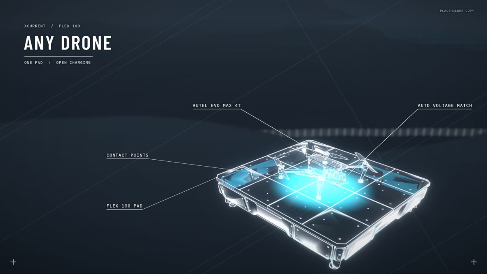
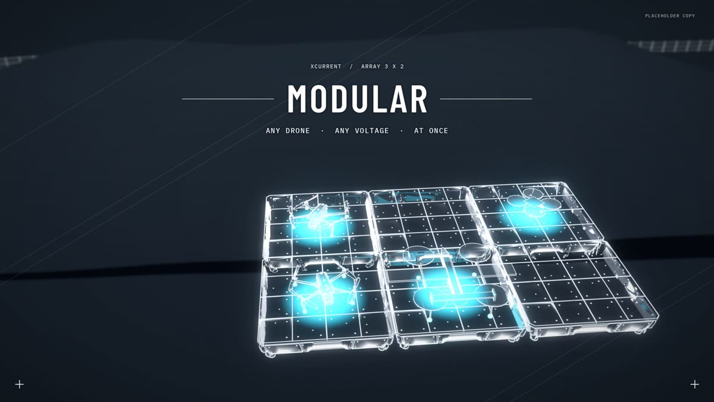
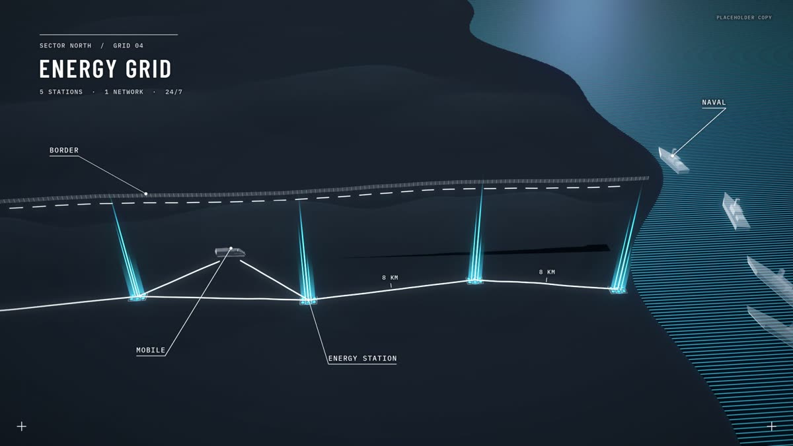
6. טקסט, קול ומוזיקה
- אין קריינות בכלל. "לא יהיה קול, לא יהיה קול בכלל" (13:18). הקריינות בגרסה 1 הייתה זמנית בלבד. כל המידע עובר בטקסט על המסך.
- יש מוזיקה. בוחרים בשלב האחרון, אחרי הווידאו. המוזיקה בשלד זמנית, ואולי ניקח מצדק רפרנס לסגנון. צריך זמינות של צדק וחיים לזה (37:07 עד 37:32).
- הטקסט מתחיל ב-"energy infrastructure" ובמה שמבדיל אותם, כמה משפטים שהצופה יבין. ושם עוצרים (צדק, 24:37 עד 24:44).
- "כל האינפורמציה שתקבל עכשיו, צדק, זו האינפורמציה שתהיה בסרט. לא יהיה כיתוב נוסף. אם חסר משהו, תעיר על זה מתוך העיצובים" (נדב, 36:54 עד 37:04).
7. סדר העבודה שסוכם
נדב, 23:00 עד 24:32, 34:12 עד 34:34, 36:22 עד 36:52
- לסמן את כל נקודות העצירה בסרט, ואיזה נתון נכנס בכל אחת.
- פריימי עיצוב בצפחה לילית עם הטקסט בכל נקודת עצירה, ובתנועות המצלמה.
- צדק מאשר את הטקסט ואת העיצוב בנקודות האלה. "ככה צדק מעורב ויודע בדיוק מה הוא הולך לקבל" (24:32).
- במקביל מתקנים את הווידאו לפי ההערות כאן (לא חוזרים לסבב שלד נוסף).
- רינדור אחד, כי זה שוט אחד. אולי בחלקים. איך מרנדרים (ומה הצינור) עוד צריך להחליט (36:31 עד 36:43).
- נדב העלה אפשרות לשלב טקסטורות ב-AI אחרי בלנדר, ושהנתונים צריכים להיכנס לפני השלב הזה (23:35 עד 23:39, לא ודאי). את ההאטות אפשר לעשות ב-slow motion בעריכה ולהחליק עם AI (23:27).
8. לוח זמנים
- נדב טס ביום ראשון (1.11) למשפחה, יהיה זמין. איתן "פול און" (37:37 עד 37:44). "לסגור את זה כמה שיותר מהר בימים הקרובים".
- צדק: זמין "גם בשבת, בכל רגע" (37:50).
9. פתוח, לברר
- ה-UGV: לוודא שיש לנו מודל של 4 הרחפנים הקטנים ושל ה-UGV עם שתי הקופסאות. תמונה נוספת מצדק היא רשות (נאמר שהקיימת מספיקה).
- הכטב"ם מחיים: מה הגודל, והאם 6 פלטות או 3 על 3.
- ביט ד': פלטה שנחשפת בפורגראונד מול חזרה פנימה לתחנה אחרת. צדק אישר את שתיהן, ההחלטה שלנו. ההמלצה: הפלטה בפורגראונד.
- קליפ ישן לדוגמה: מישהו הציע לשלוח קליפ קודם שמראה סגנון החלפה, "תגיד לי אם זה יותר הכיוון" (18:47 עד 18:58). לא ברור מי ואם נשלח.
- הטקסט עצמו בכל נקודת עצירה: הניסוח הוא שלנו, ונשלח לאישור צדק בפריימי העיצוב. שמות הבולטים מה-25.10 (Communication, Modularity) עדיין רלוונטיים.
- הסיום: האם כל הרחפנים נוחתים בסוף. "מה שתחליטו".
10. לא קשור לסרט (לידיעה)
- בסוף הזום צדק אמר שמישהו בשם "דביבו" (לפי התמלול), "החבר מברצלונה", לגבי האתר, קצת התבאס, ושאדסי (לפי התמלול) לקחה אצלם את הצעות המחיר. הצד השני אמר שאינו מכיר מישהו בשם הזה. אחר כך נשמע "סליחה, סליחה, סליחה... המעצבים שלנו, ירון..." (35:52), כנראה צדק הבין שהתבלבל בין אנשים. התמלול כאן משובש ולא ברור מי דיבר עם מי (34:46 עד 36:00). לבדוק עם נדב אם זה רלוונטי.